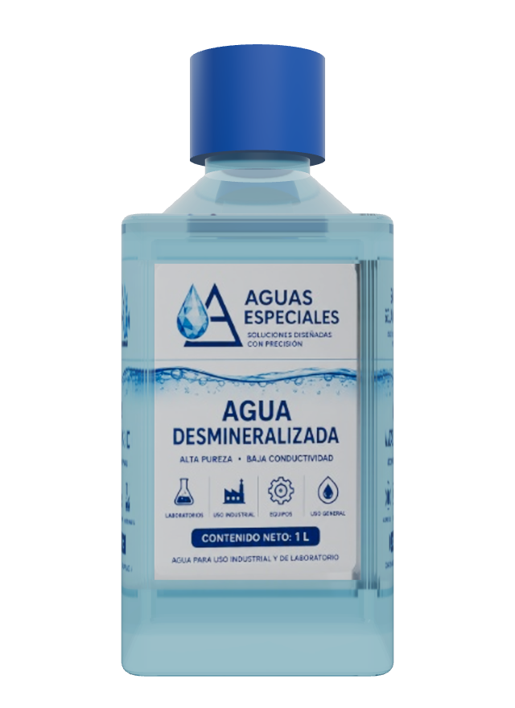

HOJA TÉCNICA
AGUA DESMINERALIZADA
ALTA PUREZA Y BAJA CONDUCTIVIDAD
| Código: | HT-AE-01 |
|---|---|
| Versión: | 01 |
| Fecha de emisión: | 05/06/2025 |
| Fecha de revisión: | — |
| Página: | 1 de 1 |
1. Descripción del producto
Agua desmineralizada obtenida mediante un proceso de desionización por intercambio iónico que remueve iones y sales disueltas, proporcionando una alta pureza y baja conductividad. Apta para aplicaciones industriales, procesos, laboratorios y usos que requieren agua de alta calidad.
2. Características y beneficios
- Alta pureza y baja conductividad.
- Libre de sales, iones y minerales disueltos.
- Reduce la formación de incrustaciones y corrosión.
- Ideal para procesos críticos y equipos sensibles.
- Calidad consistente y confiable.
3. Aplicaciones
- Procesos industriales y sistemas de enfriamiento.
- Laboratorios y análisis químicos.
- Equipos e instrumentos de precisión.
- Industria cosmética y farmacéutica.
- Hospitales y esterilización de equipos.
- Formulación de productos y soluciones.
4. Presentación

Disponible a granel y en diferentes presentaciones:
- Contenedor IBC o tote de 1,000 L
- Porrón de 50 L
- Porrón de 20 L
- Garrafón de 20 L
- A granel
También disponible el llenado de contenedores propiedad del cliente, sujeto a revisión previa del recipiente.
5. Almacenamiento
Almacenar en recipientes limpios, cerrados y en lugares frescos, protegidos de la luz solar directa y de fuentes de contaminación.
6. Especificaciones
6.1 Especificaciones fisicoquímicas
6.2 Especificaciones microbiológicas
7. Proceso de producción
- Pretratamiento
- Ósmosis inversa
- Intercambio iónico
- Agua desmineralizada
8. Calidad garantizada
Aguas Especiales garantiza que el producto cumple con las especificaciones establecidas en esta hoja y es fabricado bajo un sistema de gestión de calidad que asegura su consistencia y confiabilidad.